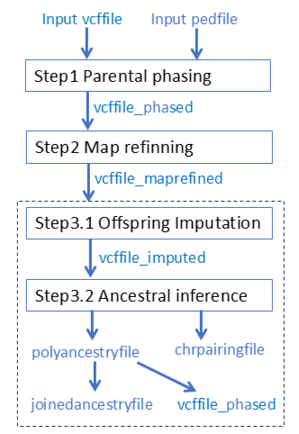

Understand output
Overview

PolyOrigin produces in total 8 files
- oustem.log: log file containing input argument values and computational time.
- outstem_plots.tar collects all figured plotted in all the three steps of PolyOrigin
- outstem_maprefined.vcf.gz: same as the input genofile except that parents are phased and map is refined
- outstem_imputed.vcf.gz: same as the input genofile except that parents are phased, offspring are imputed, and map is refined
- outstem_phased.vcf.gz: same as the input genofile except that parents and offspring are phased and map is refined
- outstem_chrpairing.csv: inference results on chromosomal pairing
- outstem_polyancestry.csv.gz: main results from ancestor inference
- outstem_joinedancestry.csv.gz: polyacestry with joined state space
In the following, we will describe polyancestry file and joinedancestry file, each of which contains a collection of dataframes.
polyacnestry file
The output polyancestryfile is a CSV file containing a list of dataframes:
pedigree: pedigree informationvalentlist: list of valent configurations for each full-sib familyvalentprob: posterior probabilities of valent configurations for all individuals except foundersparentgeno: phased genotypes for all founders and intermediators that are both parents and offspring.offspringgeno: phased genotypes for leaf offspring that have no progeny.unphasedstate: list of possible unphased origin-genotypes for each family.phasedstate: list of possible phased origin-genotypes for each family.viterbipath: best phased origin-genotypes at all markers for each individual, resulting from the Viterbi algorithm.diploprob: marginal posterior probabilities of phased origin-genotypes at each marker for each individual, resulting from the forward-backward algorithm.genoprob: marginal posterior probabilities of unphased origin-genotypes derived from the abovediploprob.haploprob: marginal posterior probabilities of parent origins derived from the abovediploprob. The posterior probabilities are unnormalized and summed to the corresponding ploidy.
In polyancestryfile, the possible origin-genotypes of an offspring (or an intermediator) are defined in terms of the parental origins of its immediate parents. The parental origins of the 1st parent (mother) are denoted by 1, 2,..., $k_1$ for the $k_1$ homologs of the parent. If the offspring is not self-fertilized, the parental origins of the 2nd parent (father) are denoted by $k_1$+1, $k_1+2$, ..., $k_1+k_2$ for the $k_2$ homologs of the parent. Thus, the definitions of phasestate and unphasestate are family-specific.
joinedacnestry file
The output joinedancestryfile is a CSV file containing a list of dataframes:
pedigree: pedigree informationjoinedspace: definition of founder origins.foundergeno: phased founders' genotypes, resulting from parental phasing and correction.offspringgeno: phased genotypes for leaf offspring that have no progeny.viterbipath: best phased origin-genotypes at all markers for each individual, derived fromviterbipathofpolyancestryfile.diploprob: marginal posterior probabilities of phased origin-genotypes at each marker for each individual, obtained by 1000 random samples fromdiploprobofpolyancestryfile.genoprob: marginal posterior probabilities of unphased origin-genotypes, derived from the abovediploprob.haploprob: marginal posterior probabilities of founder origins derived from the abovediploprob. The posterior probabilities are unnormalized and summed to the corresponding ploidy.
In joinedancestryfile, the possible origin-genotypes of an offspring (or an intermediator) are defined in terms of the founder origins of all founders (see joinedspace). The founder origins of the i-th founder are denoted by $s_i$+1, $s_i$ + 2,..., $s_i + k_i$ for its $k_i$ homologs, where $s_i$ is the accumulated sum of ploidies over founders coming before founder $i$ and it is given by $s_1$ = 0 and $s_i = \sum_{j=1}^{i-1} k_j$ for $i > 1$.